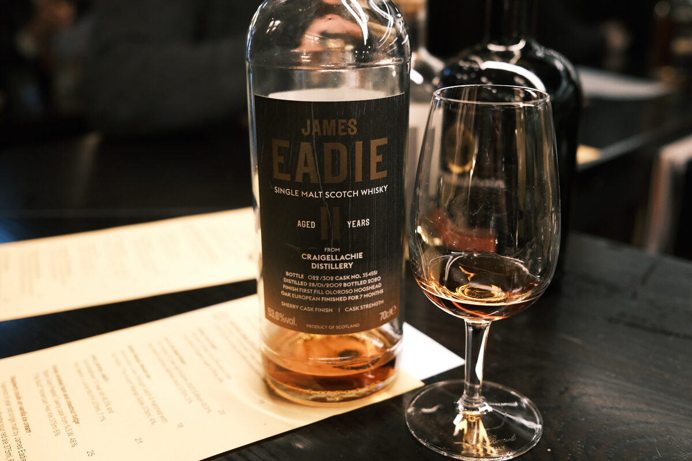

Craigellachie 2009 James Eadie 11 years 53.6% (first fill oloroso finish)
Cask 354551 (is that the oloroso?).
Colour Rust, dark amber.
Nose Dried fruits: raisins, sultanas. Meaty, mushroomy. A drop of soy sauce. Raisin bran and sultana cookies. Some rockmelon and brown sugar. With water, watermelon.
Palate Spicy, brown sugar. Sautéed mushrooms and dried fruits. Sweet miso glaze. Thick and oily mouthfeel. Malty. Lemons and limes, orange peel oils. With water, thick honey, treacle.
Finish Spiced Christmas cake, fruit mince tarts. Warming, mulled wine. Long. A bit of menthol. With water, boiled sweets, a hint of peppermint and lemongrass.
Comments Meaty, funky, sherry-forward. Distillate character is there. Lovely. 86/100.

Posted by Dominic on 14 Jun 2021